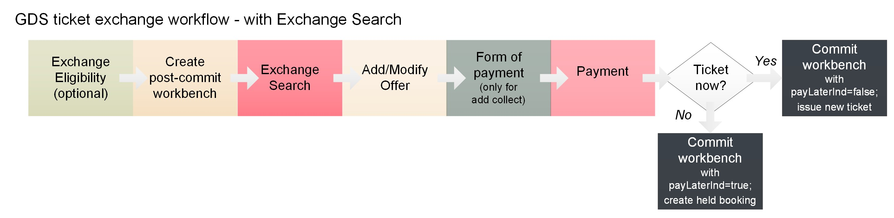
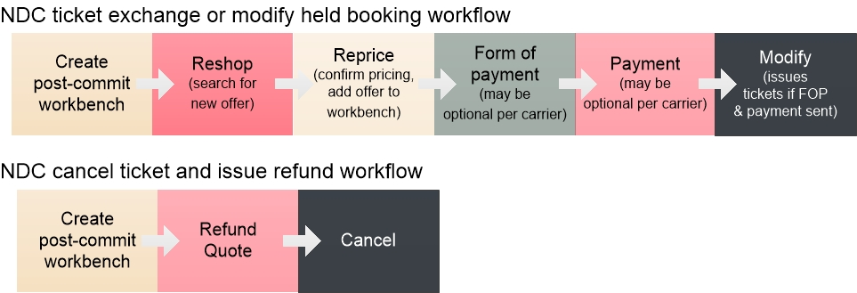

Exchange, Refund, and Void Guide
This guide summarizes the options and workflows in the JSON APIs for voiding, exchanging, or refunding ticketed itineraries, and canceling or modifying held bookings, for both NDC and GDS.
In this guide:
- Basic Concepts
- Exchange, Void, Cancel, Refund - Support & Workflows for Tickets
- Cancel and Modify - Support & Workflows for Held Bookings
- GDS Exchanges
- Workflow Steps
- Workflow Diagram
- API Usage Details
- Eligibility
- Exchange Search
- Remarks in Exchanges
- Form of Payment (FOP) (multiple FOP, forfeit residual amounts, waive change fee)
- Payment
- Workbench Commit (ticket now or hold booking)
- Supported GDS Exchange Options
- NDC Exchanges & Refunds
Basic Concepts
This section discusses the terms for the actions that are available once a held booking (reservation created but not yet paid for or ticketed) has been ticketed (payment has been made and ticket/s issued).
In general, after a ticket is issued, it can be voided, canceled, or exchanged, which may result in a refund, as follows:
-
Void: Cancel the ticket for a full refund within an allowed void period, based on the airline's rules for the market in which the ticket was issued. Generally a ticket can be voided within the same day it was issued, usually up to midnight local agency time. In some instances it may be voided up to midnight of the day after ticketing, or special holiday policies may apply.
-
Cancel: Cancel the ticket after the void period without rebooking another itinerary. Depending on the fare rules, canceling a ticket may result in a full, partial, or no refund.
-
Exchange: Modify the air itinerary on a ticket and issue a new ticket for the modified itinerary. If the price of the new ticket is less than the price of the original ticket, a refund may or may not be issued depending on fare rules.
These terms apply to how a ticket can be refunded or exchanged:
-
Automated refund: A refund processed entirely within the JSON APIs, from requesting a quote for the refund and any penalties through processing the cancellation.
-
Manual refund: Information about the refund amount and any penalties are obtained from a source other than the JSON APIs, and the JSON APIs process the cancellation. Not supported in the JSON APIs.
- Voluntary refund or exchange: The passenger or travel agency initiates the refund or exchange.
Involuntary refund: The airline cancels the ticket, such as if a flight is canceled and the passenger cannot be rebooked. Not supported in the JSON APIs.
Exchange, Void, Cancel, Refund - Support & Workflows for Tickets
The following table lists the actions available for ticketed itineraries A ticket is a booking that has been paid for and tickets issued. Ticketing requires a form of payment and payment issuance. A ticket guarantees travel (subject to carrier rules), unlike a booking, which expires after a certain time. for both GDS and NDC content.
A ticket is a booking that has been paid for and tickets issued. Ticketing requires a form of payment and payment issuance. A ticket guarantees travel (subject to carrier rules), unlike a booking, which expires after a certain time. for both GDS and NDC content.
As discussed in the NDC Guide, NDC carriers directly handle ticketing and servicing for NDC content, while Travelport handles those processes for GDS content. Because of this, the JSON APIs use different processes to carry out cancellations, voids, exchanges, and so on for GDS and NDC content after a booking is made.
In addition, NDC support for the processes below vary by carrier. For example, some NDC carriers support holding an exchange as a held booking and ticketing it later, while others require the ticket to be issued at the time of exchange. See NDC capabilities by airline through JSON API in the Travelport Knowledge Base. If you need login assistance, see Knowledge Base NDC Resources.
|
Action |
GDS Workflow |
NDC Workflow |
|---|---|---|
|
Exchange ticket for new itinerary |
|
NDC support for exchanges varies by carrier. Some carriers support exchanges only for fully unflown itineraries while others support exchanging partially flown itineraries. Some carriers require an exchanged itinerary to be ticketed at commit while others support holding the new booking. See the section Voluntary Exchange in NDC capabilities by airline through JSON API in the Travelport Knowledge Base.
|
|
Void ticket (within void period) |
or
|
When used during the void period, the following workflow cancels the ticket and issues a full refund: |
|
Cancel ticket and issue refund (automated refund) |
Not supported (under development) |
When used after the void period, the following workflow cancels the ticket and may issue a full or partial refund to the original form of payment, depending on refund eligibility per the fare rules: For carrier support and requirements, see the section Cancel in NDC capabilities by airline through JSON API in the Travelport Knowledge Base.
Refund Quote is mandatory when canceling a ticket outside the void period and there is any difference between a refund due and the purchase price. If Refund Quote is not sent, and a refund is not available for the exact amount of the purchase price, Cancel returns the error message OFFER CANNOT BE CANCELED WHEN REFUND AMOUNT DOES NOT EQUAL OFFER PRICE. PERFORM A REFUND QUOTE AND TRY AGAIN.
|
|
Cancel payment; retain booking (aka Retain Segments) |
Not supported |
On supporting NDC carriers only, you can use the following workflow to cancel the payment on a ticket but retain the itinerary and traveler details. This creates a held booking that can be re-ticketed, such as when a different FOP is wanted. You can then re-ticket the itinerary by sending Form of Payment and Payment in the standard ticketing workflow, just as for any held booking. For carrier support and requirements, see Retain Segments in NDC capabilities by airline through JSON API in the Travelport Knowledge Base.
|
|
Cancel ticket; retain ticket value (aka Retain Ticket) |
Not supported |
On supporting NDC carriers only, either within or after the void period, you can cancel the ticket and the offer but retain the ticket value instead of issuing a refund. To cancel the ticket and retain the value:
You may then be able to apply the value of the ticket to another booking using the Ticket as FOP API. Use Ticket as FOP in the normal ticketing workflow instead of the Add Form of Payment API. For carrier support and requirements, see Retain Tickets in NDC capabilities by airline through JSON API in the Travelport Knowledge Base. Note that some carriers that support this function do not support it inside the void period.
|
|
Manual refund |
Not supported |
Not supported |
|
Involuntary refund |
Not supported |
Not supported |
Cancel and Modify - Support & Workflows for Held Bookings
The table below lists the pre-ticketing actions available to cancel or modify held bookings A confirmed reservation with the carrier. A held booking is a reservation that has not yet been ticketed. The terms booking and reservation are interchangeable. for both GDS and NDC content (tickets have not yet been issued). See the notes in the preceding section about GDS and NDC content.
A confirmed reservation with the carrier. A held booking is a reservation that has not yet been ticketed. The terms booking and reservation are interchangeable. for both GDS and NDC content (tickets have not yet been issued). See the notes in the preceding section about GDS and NDC content.
|
Action |
GDS Workflow |
NDC Workflow |
|---|---|---|
|
Cancel held booking |
Two workflows are supported: or
|
|
|
Modify air itinerary on held booking |
|
Although Cancel Workbench Items cannot be used to modify NDC bookings in the post-commit workbench, you can use it to change the itinerary added to the initial booking workbench before the booking is made. This allows you to add a new offer without having to discard the workbench and start over. See the Booking Guide for details.
NDC support for modifying a held booking varies by carrier. Some carriers require a modified booking to be ticketed at commit while others support holding the modified booking. See the section Voluntary Exchange in NDC capabilities by airline through JSON API in the Travelport Knowledge Base.
|
GDS Exchanges
The following sections provide workflow and API usage and support details for the GDS exchange ticketing process.
Workflow Steps
The GDS exchange workflow shops for a new itinerary to update the currently ticketed itinerary. Exchange ticketing supports automated exchanges only, in which the JSON APIs are used for all steps of the exchange.
Seats and ancillaries can be added after the exchange is completed.
Note that the JSON APIs do not support refunds for GDS tickets.
| Step # |
Booking Workflow Step |
Description and Notes |
API Reference |
|---|---|---|---|
|
optional |
Exchange Eligibility | Optional but recommended. Exchange Eligibility determines whether a ticket has value in an exchange or refund scenario, and the range of any associated exchange fees. | Exchange Eligibility API Reference |
|
1 |
Post-Commit Workbench |
Initiate a workbench and retrieve the existing booking. |
|
| 2 |
Exchange Search |
Search for a new or modified itinerary. Supports optional journey and pricing search modifiers. Both types of modifiers are applied at the journey level, not to individual legs of the itinerary. |
Exchange Search API Reference |
| 3 | Add/Modify Offer | Add an offer from the Exchange Search response to replace or update the current itinerary. The API compares the existing itinerary with the new itinerary, deletes any flight segments no longer needed, and adds the new flight segments. Any unmodified segments remain as they are. | |
|
optional |
Add passenger-related comments and service requests |
Add remarks and service requests as necessary. |
|
|
4 (required only for add collect) |
Form of Payment |
Add Form of Payment is mandatory when there is an add collect (additional payment is due for the new itinerary). Optionally, you can use the Add Form Of Payment request to forfeit residual value, waive a change fee, or add an additional or alternate FOP. |
|
|
optional |
Send ticket-related remarks |
Optional. Exchange ticketing supports document overrides, reservation comments, and accounting remarks. See Remarks in Exchanges below. |
|
|
5 |
Payment |
Required even if you will not ticket the reservation at commit. Send the Payment request to link the FOP to one or more offer/s to pay for. |
|
|
6 |
Commit the workbench |
Required. Send Workbench Commit with the payLaterInd parameter indicating whether to issue ticket/s now or later. |
Workbench Commit API Reference
|
Workflow Diagram
The form of payment (FOP) step is required only if an additional amount is due for the exchange. Otherwise, FOP is optional and can be used to send a waiver code, forfeit residual amounts, or add an additional FOP.

API Usage Details
The following sections provide usage details for the APIs in the GDS exchange ticketing process. For object-level details, see the API Reference for each API.
Eligibility
The Eligibility API is the first step in the GDS exchange workflow. It is an optional step. Eligibility returns information about whether a ticket may have value in an exchange or refund scenario, and the range of potential exchange and refund fees. This information relates only to fees, not any fare or tax difference for the itinerary.
Exchange Search
Use Exchange Search to search for new options for the exchange. For each offer returned, the response details the differences in base fare, taxes, fees, and total price between that offer and the current itinerary.
The Search request must send criteria for the new search, and the identifier for the current, ticketed offer.
You can search for new options for only one leg of an itinerary and keep the other leg/s, or you can search for new options for all legs. To search for changes to a specific leg, send only the product identifier/s for the leg/s you want to change. (In the JSON APIs a product is one leg of an itinerary; a leg is all flight or flights between one origin and destination pair. For example, DEN>LAX and LAX>DEN could be the two legs of a round-trip itinerary.) To keep the other leg, don't send its product identifier in your search request. For any leg not sent in the request, Exchange Search returns the existing itinerary on that leg, and the exchange process retains any unmodified leg or legs.
The Exchange Search response returns up to 100 offers. Offers are numbered sequentially starting with o, e.g., o0.0, o0.1, o0.2, etc. Each offer is returned in an instance of CatalogOffering with type CatalogOfferingModify, and includes all products and flights that make up the offer. For example, a round-trip offer would return two instances of ProductOptions, one for each leg of the itinerary.
In Exchange Search, all pricing information is inclusive of all travelers across all PTCs.
Each instance of CatalogOffering includes the following:
- For each flight:
- A reference ID for the flight matching to flight details consolidated across offers in the ReferenceList object.
- Basic brand details (not ancillary details), including brand name, ID, tier.
- The boundFlightsInd indicating that flights are bound and must be sold together (true) or can be sold point to point (false).
- Price: Price of the new itinerary, including base price, taxes, and fees, including the amount or percentage of any change fee.
- PriceDifference: Difference between original and new itinerary.
- Terms and conditions of the new fare, including baggage - checked & carry on fees, price, pieces, size.
- Any endorsements or restrictions, plus the vendor-filed base currency (currency of origin country).
Refunds and Change Fee Collection Methods
In the ModifyPrice/TotalPrice object, a negative number indicates a refund, while a positive number indicates a change fee and/or an add collect (additional amount due). The following are returned in the refund and change fee scenarios:
If the new itinerary results in a refund:
- ModifyPrice/TotalPrice is negative
- TermsAndConditions/FulfillmentMethod/RefundMethod is returned with one of the following values:
- RefundToOriginalFOP: Refund automatically applied to the original FOP.
- MCO: MCO is automatically created and issued, residual value is applied to the MCO.
- EMD: SVC segment is created and EMD is issued for refundable amount.
- Unknown: If Unknown and a refund amount are returned, it means that the exchange results in a refundable balance. However, the carrier is not EMD-ready and/or does not support the refundable balance EMD, and the transaction cannot be processed via the GDC. Please process the refundable balance separately by either contacting the airline directly or using BSP Link to issue an ACM.
If the new itinerary incurs a change fee and/or an add collect:
- ModifyPrice/TotalPrice is positive
- TermsAndConditions/FulfillmentMethod/ChangeFeeCollectionMethod is returned with one of the following values:
- EMD: SVC segment is created and EMD is issued for change fee amount
- TAX: Response will also include ChangeFeeCollectionMethodCode (with the applicable tax code). Change fee will be automatically collected as a tax at the time of ticketing.
For any fare that has a private fare component, the response returns the following net ticket data (NTD). Note you must request net fares to return net fare ticket data.
- Net ticket data in Product/PassengerFlight/FlightProduct in the attributes carCode (Commercial Airline Agreement number) and valueCode (value code for the fare).
- Both Price and ModifyPrice include in their PriceBreakdown object the objects Commission (the amount of commission or the commission difference as either a percent or amount; not returned if no commission is filed or if the commission is a mix of amount and percent) and NetBaseAmount, which is the base fare filed by the airline.
See Reservation Retrieve for the NTD details returned in the Reservation Retrieve.
Remarks in Exchanges
The following optional remarks are supported in a ticket exchange workbench after adding the offer and before adding FOP or payment. You can add remarks whether you are ticketing at commit or create a held booking for the exchange.
Document overrides
See Document Overrides in the Remarks & Service Requests Guide for these:
- Commission
- Tour code
- EMD endorsements
- Adding or modifying a ticket designator
- Overriding a change fee collection method
Reservation remarks
Send reservation remarks in the Reservation Comments payload; includes vendor, OSI, itinerary, and notepad remarks. Addition and deletion are supported. See Reservation Comments in the Remarks & Service Requests Guide.
Accounting remarks
Send accounting remarks in the Accounting payload; includes historical, accounting, and DOCI remarks. Addition and deletion are supported. See Accounting Remarks in the Remarks & Service Requests Guide.
Form of Payment (multiple FOP, forfeit residual amounts, waive change fee)
Add Form Of Payment is required for an exchange only if there is an add collect (additional payment is due for the new itinerary). In this case you cannot use the FOP on the existing reservation. FOP is not required if the modified itinerary costs the same as or less than the original itinerary.
Optionally, you can send Add FOP to forfeit residual amounts, waive a change fee, or add multiple FOPs for an add collect.
Forfeit residual amounts
When exchanging a ticket, you can choose to forfeit the total residual amount, the base amount, the total taxes, or individual taxes with a tax code.
To do so, send Add FOP with the FormOfPaymentForfeit payload. In the subsequent Add Payment request, send either Amount, BaseAmount, or Taxes to specify whether to forfeit the total residual amount, the base amount, the total taxes, or individual taxes. See Add FOP and Add Payment for payloads and examples.
To forfeit for only specific traveler/s, include the traveler ID in the Add Payment request. If no traveler ID/s are sent, the forfeit is automatically applied to all travelers on the reservation.
Waive a change fee
You can waive a change fee with or without a waiver code. Waiver forms of payment are automatically applied to all travelers in a reservation.
To do so, send Add FOP with the FormOfPaymentWaiverCode payload and refer to that FOP in the subsequent Add Payment request. See Add FOP and Add Payment for payloads and examples.
Add multiple FOPs for add collect
When an add collect is due (which may include a change fee), you can choose to use multiple forms of payment for a single traveler (for BSP only), or use a different or multiple forms of payment for each traveler on the same itinerary.
To add multiple FOP, repeat the Add Form Of Payment request as necessary with one of the supported payloads in the Add Form Of Payment API Reference.
Note the following:
Change Fee to EMD:
A change fee cannot be split across multiple FOPs.
The first payment referenced will be used for the change fee and will not be used for the add collect.
If a change fee to EMD is being collected during an exchange, then the first FOP referenced in the Payment service will be used for the change fee and any other FOPs referenced will be used for the add collect (if applicable).
Add Collect:
A maximum of three FOPs can be used for one ticket – for BSP only.
ARC does not allow multiple FOPs for an add collect.
When adding FOP:
Do not add FOPs that already exist in the workbench, unless it’s a credit card for which only the expiration date has changed.
Supported FOPs are cash, invoice, and credit card.
When adding payment:
Always send a traveler reference in TravelerIdentifierRef.
When splitting payments across one ticket, ensure the amounts in Add Payment request add up to the total add collect and/or change fee.
Always send the Amount object in the Add Payment step even if the value = zero (e.g., forfeit scenario).
Payment
Sending Payment is required in the exchange workflow even if you will not ticket the reservation at commit.
In exchange ticketing, you can send Payment specifically for a change fee by including the Fees object in the payload. For example, if an exchange results in an add collect plus a change fee, and you want to use a different FOP for each, send one Payment request for the add collect and a second request for the change fee. You do not need to send multiple Payment requests when using the same FOP for all amounts to be collected; in that case, in the same Payment payload, send Amount/value for the add collect and Fees/Total Fees for the fees to pay for.
You can also use Payment to forfeit a tax amount by sending the Tax object with the amount to forfeit.
You cannot split an EMD into multiple payments.
See Payment API Reference for the payload and examples.
Workbench Commit (ticket now or hold booking)
Last, send the Workbench Commit to commit the changes. Set the payLaterInd query parameter to either issue the new ticket/s now, or create a held booking for later fulfillment.
The only difference in exchange ticketing from initial ticketing is that the payLaterInd and DocumentValue parameters are supported only for exchanges.
There is no message payload.
The Workbench Commit response returns both the previously booked offer, in an instance of Offer with @type=Offer, and the new offer, in an instance of Offer with @type=OfferModify. See the Workbench Commit API Reference for an example.
Subsequent Reservation Retrieve responses do not return the previous offer; however, several objects for the new offer indicate the exchanged status: Offer @type=OfferModify, Document @type=DocumentTicketExchange, and Offer/ModifyPrice returns the difference between the previous price and the exchanged price. See the Reservation Retrieve API Reference for an example.
For the exchanged tickets, The commit response returns the following Document @type values:
-
The previous (exchanged) ticket details are returned with Document @type DocumentTicketExchange.
-
The newly issued ticket details are returned with Document @type DocumentTicket.
-
If an EMD is issued during the exchange, such as for a change fee or a residual balance, the commit response returns Document @type DocumentEMD with the EMD number and the amount.
When travel originates outside the country of ticket issuance, the commit response returns the fare and ticket in the currency where the travel originates from, followed by the currency of the ticketing country. For example, for a ticket sold in Australia for travel commencing in the US, the base fare is returned in USD and the EQ/TTL fare is in AUD.
{
"ReservationResponse": {
"@type": "ReservationResponse",
"Reservation": {
"@type": "Reservation",
"Identifier": {
"authority": "Travelport",
"value": "0ac7cfce-6192-4f32-b6b7-6dede455c17b"
},
"Offer": [
{
"@type": "Offer",
"id": "offer_1",
"Identifier": {
"authority": "AA",
"value": "MTVhM2E4ZjQtM2Y2Mi00MzlmLTgyMzctYWVlYzMwZTA4ODY5fFA1QjQyQTU3My1CMTIxLTRGODMtODY3OHN4aHRiMTR5MjNydmMtMS0x"
},
"Product": [
{
"@type": "ProductAir",
"totalDuration": "PT2H29M",
"id": "product_1",
"Identifier": {
"authority": "AA",
"value": "3e08fb8b-b5ed-42e6-be7f-f0e628307d26"
},
"FlightSegment": [
{
"@type": "FlightSegment",
"sequence": 1,
"Flight": {
"@type": "Flight",
"duration": "PT2H29M",
"carrier": "AA",
"number": "6221",
"equipment": "E75",
"id": "seg_1",
"Identifier": {
"authority": "AA",
"value": "6bc12b59-3387-4509-8975-64cd37e28d7d"
},
"Departure": {
"@type": "DepartureDetail",
"terminal": "0",
"location": "LAX",
"date": "2025-03-21",
"time": "09:22:00"
},
"Arrival": {
"@type": "ArrivalDetail",
"location": "DEN",
"date": "2025-03-21",
"time": "12:51:00"
}
}
}
],
"PassengerFlight": [
{
"@type": "PassengerFlight",
"passengerQuantity": 1,
"passengerTypeCode": "ADT",
"FlightProduct": [
{
"@type": "FlightProduct",
"segmentSequence": [
1
],
"classOfService": "L",
"cabin": "Economy",
"fareBasisCode": "LUAIYSN1",
"fareType": "PublicFare",
"Brand": {
"@type": "Brand",
"name": "Main Cabin"
}
}
]
}
]
}
],
"Price": {
"@type": "PriceDetail",
"CurrencyCode": {
"decimalPlace": 2,
"value": "AUD"
},
"Base": 370,
"TotalTaxes": 51.8,
"TotalPrice": 421.8,
"PriceBreakdown": [
{
"@type": "PriceBreakdownAir",
"quantity": 1,
"requestedPassengerType": "ADT",
"Amount": {
"@type": "Amount",
"CurrencyCode": {
"decimalPlace": 2,
"value": "AUD"
},
"Base": 370,
"Taxes": {
"@type": "TaxesDetail",
"TotalTaxes": 51.8,
"Tax": [
{
"taxCode": "US",
"description": "U.S.A Transportation Tax",
"value": 27.7
},
{
"taxCode": "XF",
"description": "U.S Passenger Facility Charge",
"value": 7.1
},
{
"taxCode": "ZP",
"description": "U.S. Flight Segment Tax",
"value": 8.2
},
{
"taxCode": "AY",
"description": "Passenger Civil Aviation Security Service Fee",
"value": 8.8
}
]
},
"Total": 421.8
}
}
]
},
"TermsAndConditionsFull": [
{
"@type": "TermsAndConditionsFullAir",
"ExpiryDate": "2025-02-23T23:59:00Z",
"TextBlock": [
{
"@type": "TextBlockDetail",
"description": "FARE RULES",
"title": "Ticketing",
"TextFormatted": [
{
"value": "NONREF/FAREDIF/"
},
{
"value": "CXL BY FLT TIME OR NOVALUE"
}
]
}
],
"BaggageAllowance": [
{
"@type": "BaggageAllowanceDetail",
"passengerTypeCodes": [
"ADT"
],
"baggageType": "FirstCheckedBag",
"ProductRef": [
"product_1"
],
"BaggageItem": [
{
"@type": "BaggageItem",
"quantity": 0
}
],
"SegmentSequenceList": [
1
],
"Text": [
"0PC"
]
},
{
"@type": "BaggageAllowanceDetail",
"passengerTypeCodes": [
"ADT"
],
"baggageType": "CarryOn",
"ProductRef": [
"product_1"
],
"BaggageItem": [
{
"@type": "BaggageItem",
"quantity": 2
}
],
"SegmentSequenceList": [
1
],
"Text": [
"2PC"
]
}
],
"FareRuleInfo": [
{
"@type": "FareRuleInfoText",
"flightsRefs": [
"seg_1"
],
"TextFareRule": [
{
"name": "Cancel",
"value": "Not Allowed"
}
]
}
],
"PaymentTimeLimit": "2025-02-23T23:59:00Z",
"Penalties": [
{
"@type": "Penalties",
"Change": [
{
"@type": "ChangePermitted",
"ProductRefs": [
"product_1"
]
}
],
"Cancel": [
{
"@type": "CancelNotPermitted",
"ProductRefs": [
"product_1"
],
"NotPermittedInd": "true"
}
],
"PassengerTypeCodes": [
"ADT"
]
}
]
}
]
}
],
"Traveler": [
{
"@type": "Traveler",
"birthDate": "1986-11-11",
"gender": "Male",
"passengerTypeCode": "ADT",
"id": "trav_1",
"TravelerRef": "trav_1",
"Identifier": {
"authority": "Travelport",
"value": "QURUfFQx"
},
"PersonName": {
"@type": "PersonName",
"Given": "TESTFIRST",
"Surname": "TESTLAST"
},
"Telephone": [
{
"@type": "Telephone",
"countryAccessCode": "1",
"phoneNumber": "212456121",
"id": "4",
"cityCode": "ORD",
"role": "Home"
}
],
"Email": [
{
"id": "email_1",
"validInd": true,
"value": "TRAVELERONE@GMAIL.COM"
}
],
"TravelDocument": [
{
"@type": "TravelDocumentDetail",
"docNumber": "A123123",
"docType": "Passport",
"expireDate": "2035-02-21",
"issueCountry": "US",
"birthDate": "1986-11-11",
"Gender": "Male",
"PersonName": {
"@type": "PersonName",
"Given": "TestFirst",
"Surname": "TestLast"
}
}
]
}
],
"Receipt": [
{
"@type": "ReceiptConfirmation",
"id": "receipt_1",
"Identifier": {
"authority": "AA",
"value": "4afd7900-bcf6-4473-9109-44bd60d14ffb"
},
"OfferRef": [
"offer_1"
],
"Confirmation": {
"@type": "ConfirmationHold",
"Locator": {
"source": "AA",
"sourceContext": "OrderId",
"value": "AA001HGO3HWA4"
}
}
},
{
"@type": "ReceiptConfirmation",
"id": "receipt_2",
"Identifier": {
"authority": "AA",
"value": "ba4391ec-e0da-4290-98ca-f17d5b7b1060"
},
"OfferRef": [
"offer_1"
],
"Confirmation": {
"@type": "ConfirmationHold",
"Locator": {
"source": "AA",
"sourceContext": "VendorLocator",
"value": "IKRWES"
},
"OfferStatus": {
"@type": "OfferStatusAir",
"StatusAir": [
{
"flightRefs": [
"seg_1"
],
"code": "HK",
"value": "Confirmed"
}
]
}
}
},
{
"@type": "ReceiptConfirmation",
"Identifier": {
"authority": "Travelport",
"value": "9acfe47e-c903-491b-b3d1-c8bb80970815"
},
"Confirmation": {
"@type": "ConfirmationHold",
"Locator": {
"source": "1G",
"creationDate": "2025-02-22",
"value": "B7KT1S"
}
}
}
],
"ReservationComment": [
{
"@type": "ReservationComment",
"id": "reservationComment_1",
"Comment": [
{
"id": "comment_1",
"name": "SWITT1G/XB7/99999992/SYD/1G/T/AU/AUD/001TEST",
"language": "EN",
"value": "SWITT1G/XB7/99999992/SYD/1G/T/AU/AUD/001TEST"
}
]
}
],
"ReservationDisplaySequence": {
"@type": "ReservationDisplaySequence",
"DisplaySequence": [
{
"@type": "DisplaySequence",
"displaySequence": 1,
"OfferRef": "offer_1",
"ProductRef": "product_1",
"Sequence": 1
}
]
}
}
}
}Supported GDS Exchange Options
The Exchange APIs support the search and exchange options detailed below.
Supported Changes
Supported itinerary changes are as follows:
- Changes to outbound and inbound dates and times, origins, destinations, independently or together for outbound and inbound
- Outbound and inbound on one carrier or different carrier (interline)
- Alternates (for the changed flight) include only nonstop/direct or one connection
- Outbound and inbound routing change at the same time
- Outbound and inbound date and routing (combo of one or the other) change at the same time
Supported Ticketing Options
Exchanges are supported for the following:
- Automated exchanges
- One-way, round-trip, interline, and open-jaw itineraries
- Exchanging multiple air offers for single or multiple passengers
- Tickets previously exchanged with the JSON GDS Exchange APIs (or using Travelport Automated Exchanges)
- Multi-offer tickets
- Bookings with up to 9 passengers
- All PTC codes, up to a maximum of 4 PTC types on one booking
- Up to 16 segments for all products in the reservation/ticket
- Up to 2 connections for the outbound leg and up to 2 connections for the inbound leg
- Wholly unflown and partially flown tickets
- Currencies with zero, two, and three decimals
- Private fares
- Net fares with mark up using an account code
- Exchanges for an empty reservation, which can result when air segments and stored fares are canceled but the reservation is kept open to retain traveler and ticket information. Refer to the bullet below for a restriction on empty PNRs with the original ticket of IT/BT (inclusive tour code fares / bulk fares).
- Bulk IT/BT tickets on CAT 35 fares. However, if the original ticket has an IT/BT and if those flights were canceled and no flights from the original ticket were flown, then the reservation is empty and the original tickets with private fares cannot be exchanged.
- BSP EMD change fees and BSP change fee as tax
- Supported forms of payment (FOP) are cash, check, credit, or invoice
- Alternate form of payment (FOP) using a different credit card than used for the original ticket
- Document Overrides:
- Commission on fare
- Endorsement
- IT/BT
- Tour Code
- Override change fee collection method in Document Override
Other notes:
- Changes to a reservation apply to all passengers on that reservation.
- Exchange Search returns a response only for the ticketed passengers on an itinerary. For example, in the US market, a domestic INF on lap would not be shown in the exchange response; however, all changes will apply to that INF traveler.
- If Exchange Search returns RefundMethod of Unknown and a refund amount, and an exchange is carried out and committed, any residual balance will be forfeited.
- Travelport does not collect OB fees on reissued tickets.
Multi-offer Exchange Support
Exchanges are supported in the Exchange APIs for multiple tickets (multi-offer tickets) for a single passenger, for multiple passengers, and for up to four PTCs, subject to the following:
-
Multi-offer exchanges are supported only for segments with fares quoted separately (separate filed fares).
-
A single workbench session supports exchanging one offer at a time one or multiple passengers. For example, if you want to modify all legs of a round-trip itinerary for two passengers, and each leg of the round-trip is a separate offer, follow this sequence:
-
Exchange the outbound/departure leg for passengers 1 and 2
-
Exchange the inbound/return leg for passengers 1 and 2
-
-
Your PCC must be provisioned for exchanging multi-offers or an error message is returned. Contact your Travelport representative if necessary.
For more about multi-offer ticketing, see Multi-offer Bookings in the Booking Guide.
Exchange and Refund Handling
The following applies to exchanges and refunds:
- BSP carriers must support EMD:
- Change fees are collect via EMD
- Refundable balances are automatically refunded via EMD
- In both cases, a SVC segment is added and the EMD issued
- ARC Carriers must support MCO:
- Change fees are collected at time of ticketing
- MCO is automatically issued for any negative balance (refund or retain)
- Option to forfeit any residual value
- Tax is supported in BSP markets
- Overriding the change fee collection method is supported with document override remarks
Currently Unsupported
The GDS Exchange APIs do not currently support:
- Manual exchanges
- NDC content (handled with the Reshop, Reprice, and Modify APIs)
- Refunds without any itinerary exchange (separate refund functionality is under development)
- Unworked schedule changes (i.e., tickets with unaccepted flight changes)
- Tickets with the same PTC types priced separately.
- Tickets that have been previously exchanged outside the JSON APIs and/or Travelport Automated Exchanges.
- Split/divided tickets
- Unaccompanied minors
- No-show scenarios
- Category 16 data
- Carriers that don’t file Category 31 (voluntary changes) and Category 33 (voluntary refunds) rules data. Category 16 is text-based information regarding exchanges and refunds. The Eligibility API relies on Category 31 and Category 33. Some carriers may not fully maintain the integrity and consistency of the data between Category 16 (text based) and Categories 31 and 33 (rule based). In such cases Eligibility relies on Categories 31 and 33.
NDC Exchanges & Refunds
The following sections provide workflow and support details for the APIs in the NDC exchange ticketing process. The same APIs and processes are also used to modify or cancel held bookings for NDC.
Workflow to Exchange Tickets or Modify Held Booking
The NDC exchange workflow shops for a new itinerary to update the currently ticketed itinerary. Supported only for automated exchanges only, in which the JSON APIs are used for all steps of the exchange.
This same workflow also supports changing the itinerary on a held booking.
| Step # |
Booking Workflow Step |
Description and Notes |
API Reference |
|---|---|---|---|
|
1 |
Post-Commit Workbench |
Initiate a workbench for the existing booking. |
|
|
2 |
Reshop |
Search for a new itinerary for either a held booking or to exchange a ticket. |
|
|
3 |
Reprice |
Confirm pricing on a selected offer from the Reshop response and add that offer to the workbench. |
|
|
4 may be optional or required |
Form of Payment |
Add Form of Payment may be required in the case of an even exchange or an add collect (the new price is greater than the original). Some NDC carriers require tickets to be issued at commit while others support booking now and sending payment later. See the Support Table and Workflow Summary in the Exchanges Guide for details. |
|
|
5 may be optional or required |
Payment |
May be optional or required depending on carrier rules. See Form of Payment in the row above. |
|
|
6 |
Modify |
Required. |
|
Workflow to Refund Ticket or Cancel Held Booking
The NDC refund workflow first determines whether any refund value is available for a ticket, and then cancels the ticketed itinerary.
To cancel a held booking, use this workflow without the Refund Quote in step #2.
| Step # |
Booking Workflow Step |
Description and Notes |
API Reference |
|---|---|---|---|
|
1 |
Post-Commit Workbench |
Initiate a workbench for the existing booking. |
|
|
2 |
Refund Quote (omit for held bookings) |
Determine what if any refund value may be available on the ticket. |
|
|
3 |
Cancel |
Cancels the ticket or booking. |
Workflow Diagrams
In the following diagrams, each box represents one API call in the workflow.

Supported NDC Exchange Options
In general, NDC supports the following changes on either a held booking or a ticketed itinerary:
-
Modify the date, time, flight, cabin, or origin and/or destinations
Ticket exchanges are supported for the following:
- Automated exchanges
- One-way, round-trip, interline, and open-jaw itineraries
- Bookings with up to 9 passengers
- All PTC codes
Carrier support varies for the following:
-
Adding new air segments
-
Modifying seats or ancillaries
-
Modifying or adding flights after travel commences
-
Canceling a booking with ancillaries or seats
-
Canceling a divided booking.
See the Cancel section in NDC capabilities by airline through JSON API in the Travelport Knowledge Base. If you need login assistance, see Knowledge Base NDC Resources.